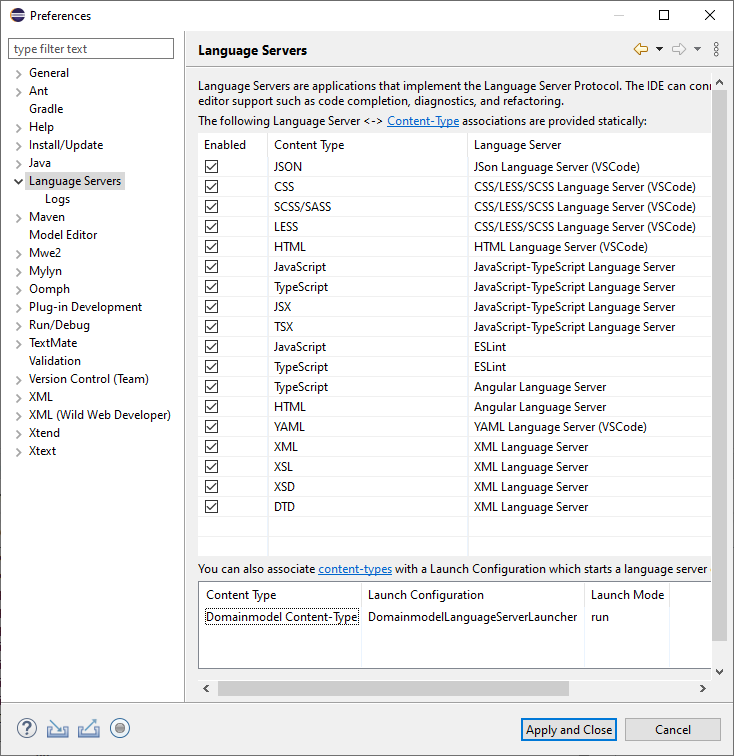

LSPサポート
Xtextは Language Server Protocol (LSP)に準拠する言語サーバーの生成をサポートしています。
はじめよう
Step 1: 新しいXtextプロジェクトを言語サーバーサポートをつけて作成する。

Step 2: Xtext - 15 Minutes Tutorialに従いドメインモデル言語を実装する。
Step 3: LSP4Eに基づき、Eclipseでドメインモデル言語サーバーを試す。
-
コンテントタイプを
*.dmodelファイルに設定する

-
ドメインモデル言語サーバーを起動するようローンチ設定を作成する:

-
ドメインモデルコンテントタイプをドメインモデル言語サーバランチャーに割り付ける:
 - LSP does not support syntax highlighting (usually it is done on the client side). The following TextMate json file adds syntax highlighting support for the keywords, single-line and multi-line comments of the Domainmodel language:
{ "name": "Domainmodel", "scopeName": "text.dmodel", "fileTypes": [ "dmodel" ], "repository": { "general": { "patterns": [ { "include": "#linecomment" }, { "include": "#blockcomment" }, { "include": "#keyword" } ] }, "linecomment": { "name": "comment.line.double-dash.dmodel", "begin": "(^[ \\t]+)?(?=//)", "end": "(?=$)" }, "blockcomment": { "name": "comment.block.dmodel", "begin": "/\\*(\\*)?(?!/)", "end": "\\*/" }, "keyword": { "name": "keyword.control.mydsl", "match": "\\b(entity|datatype)\\b|!" } }, "patterns": [ { "include": "#general" } ], "uuid": "8383e49a-fa0d-4bb5-827b-10e8abb294ca" } - Genericエディターで
*.dmodelファイルを開き、シンタックスハイライト、コンテントアシスト、検証、コードレンス、クイックフィックス、フォーマット … のような言語機能を調べます :

Step 4: Atom、Eclipse Che、Eclipse Theia、IntelliJ IDEA、Monaco Editor、VS Code … に基づき、LSPクライアントを思うままに実装してください。現在サポートされているLSPクライアントはhttps://langserver.org/のLSP Clinetns節にて確認することができます。
言語機能
現在、Xtextは以下のLSP言語機能をサポートしています:
| LSP 3.16.0 (released on 2020-12-14) LSP4J 0.10.0 (released on 2020-11-05) |
Xtext 2.24.0 (released on 2020-12-01) |
|---|---|
| Diagnostic (aka 検証) | |
| 補完 (aka コンテントアシスト) | |
| スニペット (aka テンプレート提案) | |
| ホバー | |
| 署名補助 | |
| 宣言へ移動 (aka ハイパーリンキング) | |
| 定義へ移動 (aka ハイパーリンキング) | |
| 型定義へ移動 (aka ハイパーリンキング) | |
| 実装へ移動 (aka ハイパーリンキング) | |
| 参照の検索 | |
| ドキュメントハイライト (aka 強調表示) | |
| ドキュメントシンボル (aka モデル要素、アウトラインビュー) | |
| コードアクション (aka クイックアシスト、クイックフィックス) | |
| コードレンス (aka コードマイニング) | |
| ドキュメントリンク (aka ハイパーリンキング) | |
| ドキュメントカラー | |
| ドキュメントフォーマッティング (aka フォーマッティング) | |
| 選択範囲のフォーマット (aka フォーマッティング) | |
| タイピング中のフォーマット (aka 自動編集) | |
| リネーム (aka リネームリファクタリング) | |
| 範囲折り畳み (aka 折り畳み) | |
| 範囲選択 (aka ダブルクリックテキスト選択) | |
| 呼び出し階層 | |
| セマンティックトークン (aka セマンティックハイライト) | |
| 編集範囲のリンク (aka リネームリファクタリング) |
ユニットテスト
自動テストはソフトウエアの保守性と品質にとって重要です。そのため、あなたの言語サーバーに対してユニットテストを書くのを強く推奨します。Xtextは自動LSPユニットテストを実装する際に役に立つ抽象クラスorg.eclipse.xtext.testing.AbstractLanguageServerTestを提供しています。org.eclipse.xtext.ide.tests.serverパッケージはおおよそすべての言語機能をサポートするJUnitテストケースを含んでいます。Xtextベースの言語サーバーに自動ユニットテストを実装する方法についてのインスピレーションを得るため、それらを自由に研究してください。